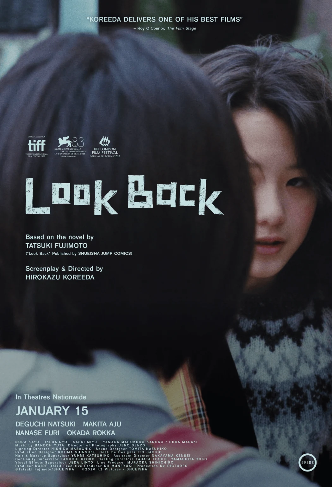

OLD MAN OTAKU / MANGA ADAPTATIONS
Look Back’s Live-Action Film Gets North American Dates—and a Story Artists Will Recognize
Hirokazu Koreeda’s adaptation opens in select theaters December 30, before a January 15 expansion. The creative relationship at its center makes it especially relevant to comic makers.

Look Back is returning to theaters in a different form. GKIDS has announced North American release plans for Hirokazu Koreeda’s live-action adaptation of Tatsuki Fujimoto’s manga.
The film begins opening in select theaters on December 30, 2026, followed by a nationwide expansion on January 15, 2027. Those dates describe a staged rollout; they do not mean every local theater will have the film on the first day.
This is the live-action production, distinct from the animated adaptation released in 2024. GKIDS announced the schedule on October 20 alongside a new trailer.
A manga about the people who make manga
The story follows Fujino, a confident young artist, and Kyomoto, a withdrawn classmate whose work challenges her sense of her own ability. Their connection grows through drawing and the discovery of what they can create together.
For readers coming to the film for the first time, that is enough of the premise. Its emotional turns are better experienced than itemized in a release-date article.
RogueVerse analysis: What makes this especially relevant to creators is the attention it gives to the work behind an image. Practice, comparison, frustration, and finding somebody who understands your creative obsession can all shape the experience of making comics.
That is a different kind of recognition from seeing an artist portrayed only at the moment of success. A finished page can conceal the abandoned attempts that came before it. A creative partnership can change not only the work, but the reasons someone keeps making it.
Another format, another set of choices
Live action brings a new set of tools to that material: performance, physical space, and the small gestures between people. How Koreeda uses them is something to assess in the finished film, rather than assume from its premise or trailer.
For now, this is release news, not a RogueVerse review. The official dates give North American viewers a window to watch for tickets and local listings.
For artists, writers, and anyone who has stared at somebody else’s work and wondered whether to try harder or put the pencil down, the subject alone makes Look Back worth keeping on the calendar.
Copyright & image ownership
©Tatsuki Fujimoto/SHUEISHA ©2026 K2 Pictures・SHUEISHA. Poster via GKIDS.
Third-party characters, artwork, titles, logos and trademarks belong to their respective rights holders. Images accompany editorial reporting and commentary; RogueVerse Studio claims no ownership of third-party IP and is not affiliated with or endorsed by its rights holders.
Article text and RogueVerse branding © 2026 RogueVerse Studio. All rights reserved.